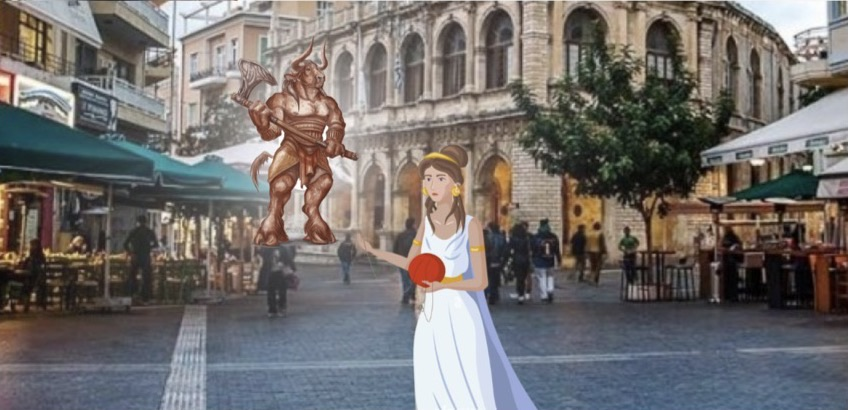
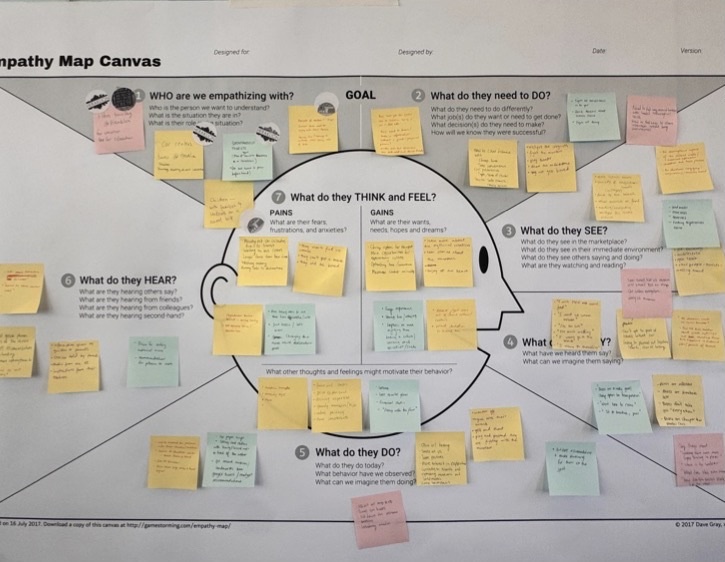
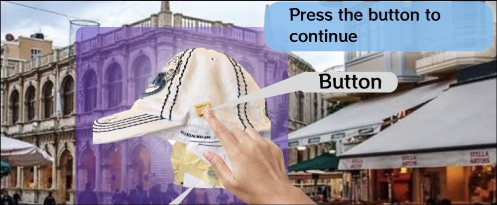
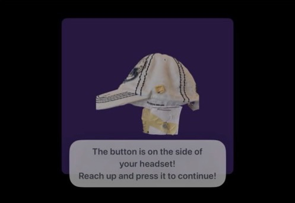
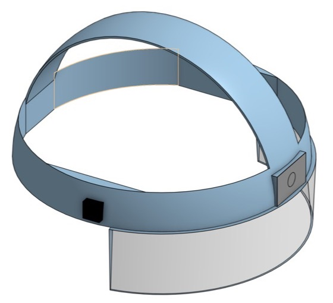

HeraKlue
An AR scavenger hunt that turns sightseeing in Heraklion into a Greek myth adventure for kids, so parents can actually enjoy the site too. Built and tested on the streets of Crete over three rounds of guerrilla usability testing.
My role: built the AR app in Swift, ARKit and RealityKit, and ran on-site usability tests.

- Timeline
- May – Jun 2026, UVA study abroad (CID 2026)
- Team
- 3 students
- Methods
- Empathy mapping, paper & Figma prototypes, guerrilla testing
- Tools
- Swift, ARKit, RealityKit, Figma
01 · Research
Finding a problem worth solving
We started broad, mapping what tourists in Heraklion need. Transportation, navigation and itinerary ideas came up first, but those spaces were either crowded with existing apps or too niche to matter.
The breakthrough came on a visit to the Palace of Knossos. Many of the children there were bored and restless, and their parents spent the visit trying to keep them engaged instead of enjoying the site. That was a problem affecting two users at once.
How might we engage children during sightseeing while also letting parents fully enjoy Heraklion’s historical and cultural landmarks?

02 · Concept
Myths, layered onto the real city
HeraKlue hides characters from Greek mythology around a real tourist site. Kids wear a headset, walk around to find them, and collect puzzle pieces as the story unfolds through audio.
- Mythology in place: the story happens at the actual landmarks, not on a separate screen.
- Minimal interaction: one physical button on the headset, so kids don’t need instructions.
- Movement over screens: kids explore by walking and looking around.
- Location-anchored AR without geo-anchors, keeping the build simple enough to ship in weeks.
03 · Iteration
Three rounds of testing on the street
We ran guerrilla tests around Heraklion in 35°C heat, changing the prototype after every round.
Round 1: Paper & Figma
- Parents loved photographing their kids in the paper headgear, but some kids felt self-conscious wearing it.
- Too much text: kids skipped the instructions and didn’t follow the story.
Round 2: Hat + audio
- Swapped headgear for a hat with a hand-sewn button and earbuds, and turned text into audio.
- Collecting puzzle pieces was intuitive and fun, but the button was hard to find and the game felt too easy.
Round 3: Real AR
- Built working AR with a cardboard headset and a real button.
- Far more immersive: kids walked around searching for characters and puzzle pieces. Scene transitions still confused some.


04 · Outcome
What changed from paper to AR
- AR drew the most interest. In the final round kids physically explored the space, walking around to find characters and puzzle pieces.
- One button worked. After a short tutorial, the wired earbud button was easy and intuitive.
- Pitched and demoed at Bizrupt, with a business case for renting headsets at sites like Knossos and partnering with museums and tour operators.
05 · Reflection
What I learned
- Ambitious tech carries hidden risk. Start small, aim high.
- Simple interactions can beat complex ones. One button did more than a menu would have.
- Test early, before weak assumptions turn into final design choices.
- Kids are hard to test. Feeling watched kills honest feedback.
- Guerrilla testing in 35°C heat is its own design constraint.
06 · Next steps
Where it goes from here
- Make AR navigation and scene transitions clearer.
- Smooth the experience flow so exploring feels natural.
- Explore headset designs, from sleek AR glasses to playful themed gear.
- Balance kid-friendly fun with comfort for parents.
